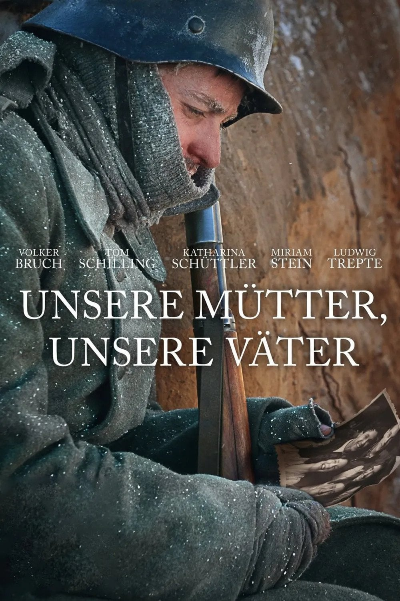
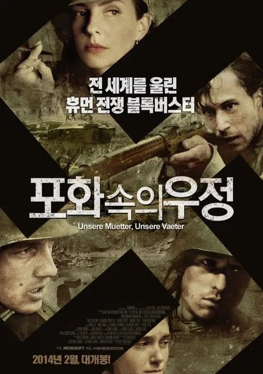
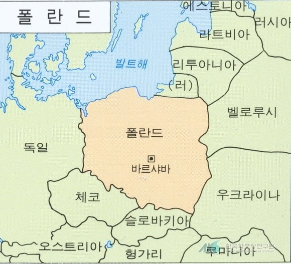
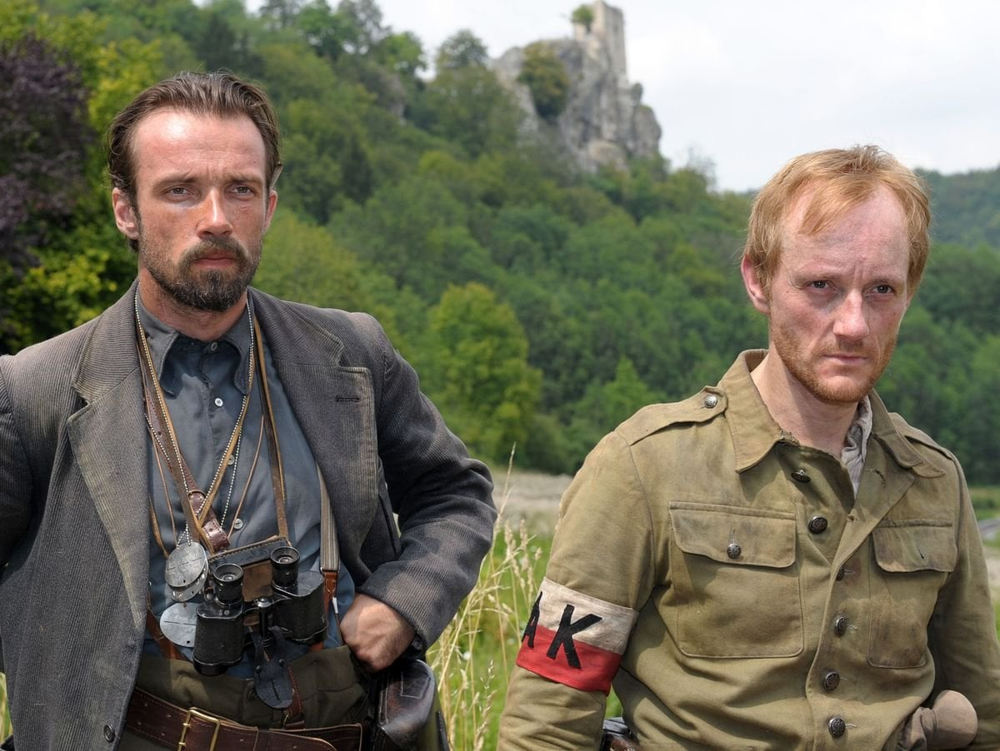
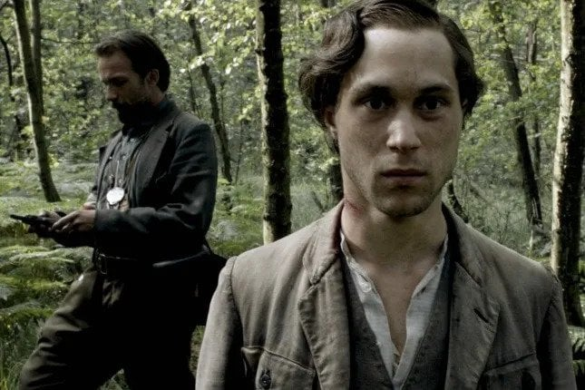
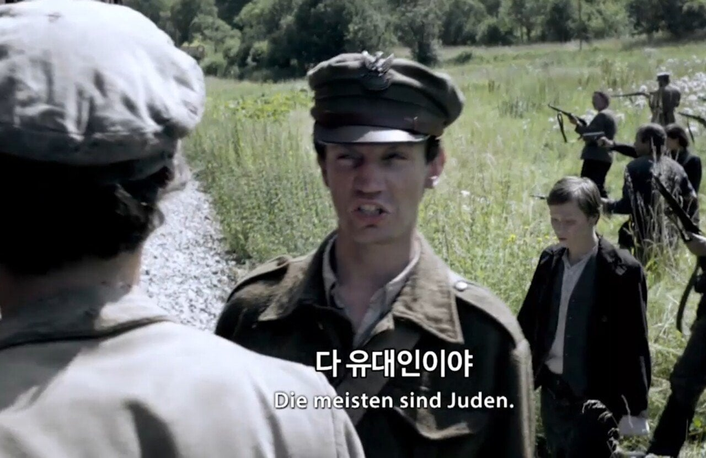
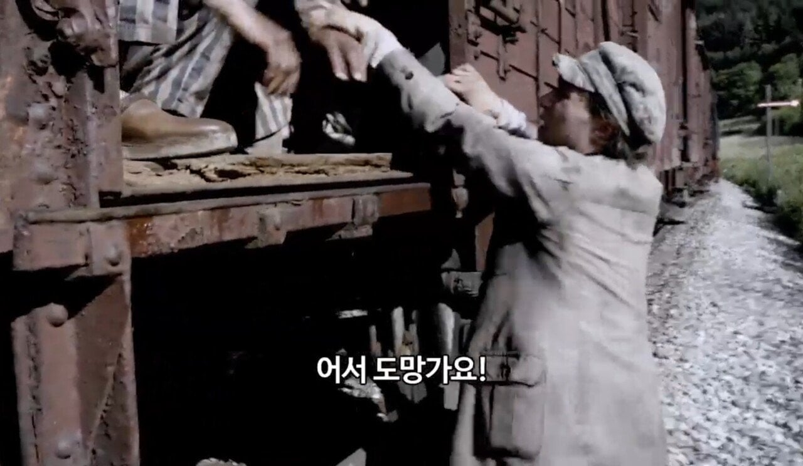
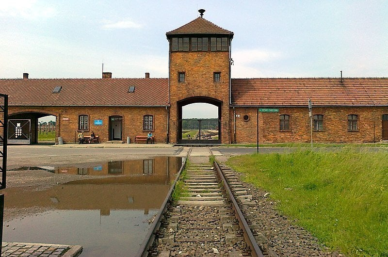

독일 공영방송인 ZDF에서 방영한 《Unsere Mütter, unsere Väter (우리 어머니, 우리 아버지)》라는 전쟁 드라마인데

한국에선 《포화속의 우정》이란 영화로 개봉했음

그런데 2차대전 당시 독일의 점령지였던 폴란드가 드라마 내용을 가지고 국가 차원에서 항의를 했는데....

바로 작중 등장하는 폴란드 파르티잔들이 "반유대주의" 성향을 가지고 있다는 설정 때문임.

해당 드라마 속 주인공 중 한명이자 유대인인 '빅토르'는 아우슈비츠로 끌려가다 탈출해서 폴란드 파르티잔 대원이 됨

여기서 파르티잔들은 독일군 수송열차를 습격했지만 차량 내 죽어가는 유대인들을 보고 "유대인들은 죽도록 놔두는게 좋다"면서 유대인들을 방치함

그러나 주인공 '빅토르'는 유대인들을 몰래 풀어주다가 대원들한테 발각됨
이때 파르티잔 리더는 '빅토르'를 산속으로 끌고가 처형하는 대신 권총을 쥐어주고 도망치도록 도와줌

해당 내용을 본 폴란드는 "홀로코스트로 매우 악명높은 아우슈비츠가 있었는데다 나치에 저항한 파르티잔들을 굳이 반유대주의자로 만들었어야 했냐?"고 항의했다 함
최악의 학살을 하던 아우슈비츠가 폴란드에 있엇는데 그걸 ㅋㅋㅋㅋ